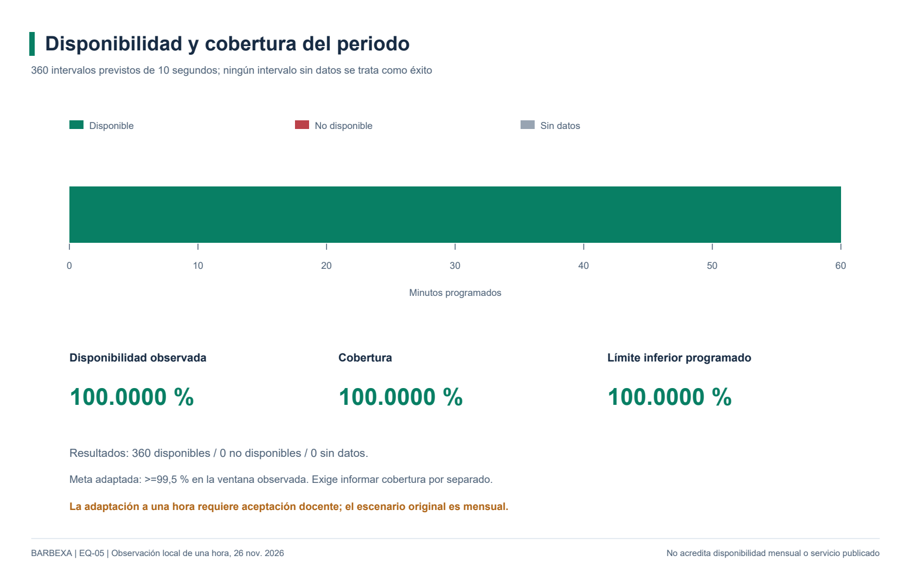
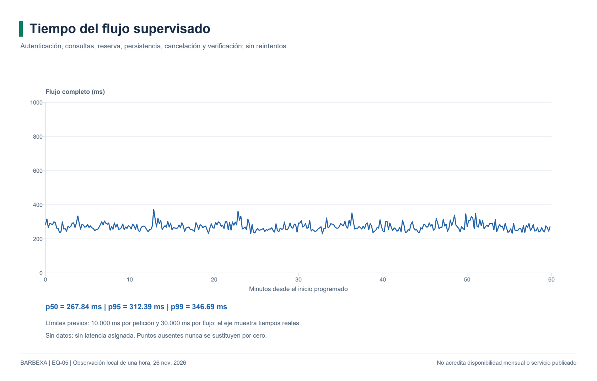
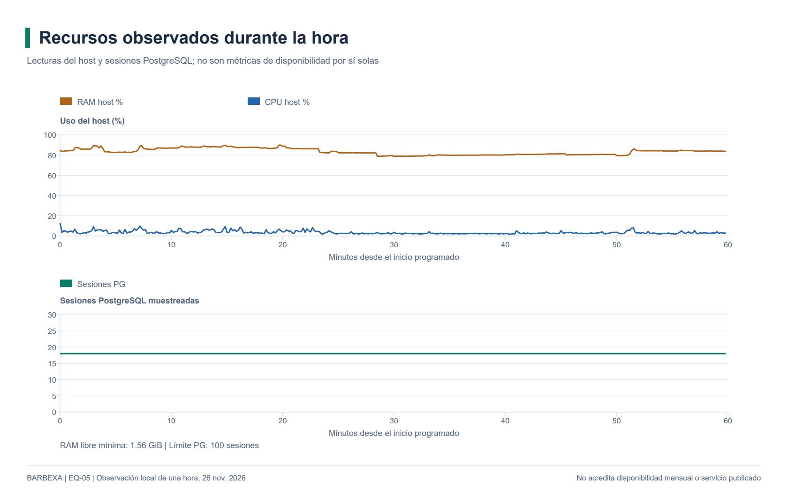

BARBEXA · EQ-05
Evaluación automatizada de una hora · laboratorio local · 26/11/2026
Objetivo local de la ventana alcanzado
Inicio: 26/11/26, 3:27:14 p. m. · Fin: 26/11/26, 4:27:14 p. m. · Cada 10 s
| Métrica | Resultado |
|---|
| Disponibilidad sobre tiempo observado | 100,0000 % |
| Cobertura del periodo programado | 100,0000 % |
| Disponibles / no disponibles / sin datos | 360 / 0 / 0 |
| Tiempo observado | 3600 / 3.600 s |
| p95 del flujo completo | 312,39 ms |
| Reservas propias activas al terminar | 0; limpieza lógica exclusiva |
No acreditado mensualmente; evaluación local preliminar. La adaptación requiere aceptación docente; una hora local no acredita disponibilidad mensual ni servicio publicado.
Flujo real
Autenticación → catálogo → horarios → reservas propias → confirmación → persistencia → cancelación exclusiva → verificación de limpieza. Sin mocks ni reintentos dentro de la medición.
Límites previos: 10 s por petición, 30 s por flujo. Intervalos sin datos separados y fuera del numerador de éxitos.
Gráficas


